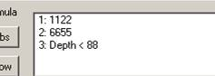
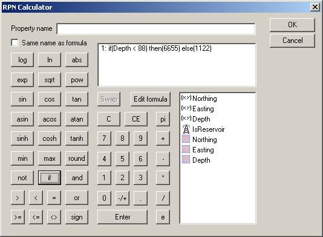

The Geomec RPN calculator is useful for:
The calculator works on values, which are stored within Geomec which are in SI units although the calculator does not check on, nor work with units. All parameter "units" with dimensions are hence in metres, MPa and kg/m3, Celcius or angle degrees, even if the imported data are in FIELD units. The values can also be the result of another calculation on the same pointset.
The calculator uses the Reverse Polish Notation (RPN) system and hence works on a stack of operands in reverse order. "Reverse notation" basically means that working on the operands, which were created last and are, hence, on the top of the stack. The lowest operand is taken first.
Example: A pointset is required where a value (say Young's modulus) depends on Depth (the Depth coordinate of the pointset). A formula is required where the value is 6655 at Depth < 88m and 1122 at Depth > 88m, so (xy) Depth is selected (by double-clicking from the list of operands) followed by 88 (clicking on the keypad) and then on the operator "<". The calculator takes the 2nd item in the stack first to get Depth < 88 as a result. Then one proceeds by typing 6655, Enter, 1122. The <Enter> command is only required to separate the input of two numerical values. The picture below will be seen with 3 arguments on the stack.

Figure: Stack before pressing "if"
The <If> operator requires 3 arguments: The "logical" part, which can be True or False on the 3rd line, the True outcome on the 2nd line and the Else outcome on the 1st line.
If the wrong order of values is in the stack, two items at a time can be swapped by selecting (exactly) two lines (ctrl-mouse click) and pressing <Swap>.

Figure: Stack and calculator after pressing "if"
While working with the calculator it is possible to have several operands on the stack. However after the result of a calculation there can be only one operand on the stack. If, in addition to the desired result, other values remain on the stack they should be removed using the CE button. The CE button breaks down the formula on row 1 or removes the first single item on the stack so the Swap button must be used first in order to remove other items from the stack.
Note that operators that return either "true" or "false" do so using 1 and 0 respectively so that they may be used for multiplication purposes.
Note: Care should be taken when modifying surfaces that the logical operands do not point to non-existent or renamed formations
Note: Model specific items such as Formations or Derived Results are not available.
In case of results, the user must indicate whether he wishes a fixed depletion stage (and linear/non-linear calculation) to be taken (that does not vary with the selected stage), for instance DisplacementN_D1_N, or that he wishes a generic results, that changes with the selection in the viewer or the export, for instance DisplacementN. A formula like “DisplacementN – DisplacementN_D1_N” will render the displacement change in Northing direction between the selected depletion stage (and linear / nonlinear mode) and the North-displacement in Depletion Stage 1 for the nonlinear computation.
In case material parameters have been chosen in the formula, the assigned value in Depletion Stage 0 will be selected, although it is possible to change material parameters in Depletion Stages, provided a Branch with restart file has been created. In future releases, the material parameters might become Stage sensitive.
Note: User specific items are not available since they are not stored with the model but on the user's PC and so are not available for a different user or on a different PC.
See also “User Defined Results” for Depletion stage dependent results.
Most operators are straightforward in terms of use, some notes on the less obvious functions follow:
The formulas can be hand-edited with the "Edit formula" button. Numbers and operands can be changed by selecting and typing. When creating a similar calculation as an existing one (eg. just a change in the depletion stage), the formula can be selected in edit mode and copied and sent to memory by pressing Ctrl-C. When creating a new calculator item and pressing "Edit formula" the formula in memory can be pasted using Ctrl-V. A formula can also be copied in this way between Geomec models.
The calculator does not check for impossible operands like (-3)2.5 or asin(-2). The output for such a formula will display 'nan' or junk results. This type of behaviour occurs due to the fact that the calculator uses the RPN method to create formulas.
The infix notation formula which is shown in the calculator window does not use implicit precedence and associativity of operators. This means that 1+2+3 will always be written as (1+2)+3.
If an operator or function button is clicked with insufficient operands on the stack then the button click is ignored (e.g. clicking 'if' with only one or two operands on the stack). The formula editor checks for a sufficient number of operands for each operator/function. A text formula which is fed back to the calculator should not change when displayed in the calculator (except perhaps for the number of parentheses).
The -/+ button only works on numerical operands and only when 'Enter' has not yet been clicked. The formula editor mimics this behaviour.
The formula editor is case sensitive: abs(a) is understood, but Abs(a) is not.
Numerical variable names (e.g. a pointset name) are valid but strongly advised against. When feeding name '25' back from the formula editor to the calculator, it is treated as number 25 as the formula is simply text. This is probably not what is required.
Variable names do not have to be unique in a pointset, i.e. they may all be called 'pressure'. The calculator (in edit mode) will not recognise this and will pick the first entry with the given name.
If a formula is copied and pasted from one model to another it may contain items with names that the receiving model does not know about. This will result in an error message.
Formula results should be connected to the pointset entry and then connected to the appropriate cells (element set) in the material model, pressure or temperature. When modifying calculator entries the pointset entries should be checked to see whether they have been updated (the updated calculator might reside next to the old calculator result). To be certain the pointset variable (with the calculator result) should be deleted and recreated.